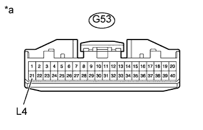
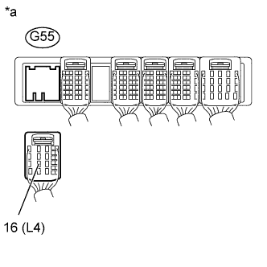

DTC P2772 Диапазон / характеристики цепи переключателя нижнего диапазона полного привода (4WD) |
| Код DTC | Условие обнаружения DTC | Неисправный участок |
| P2772 | Датчик положения L4 раздаточной коробки остается включенным, несмотря на то, что автомобиль в течение 1,8 с или дольше движется в следующих условиях (логика диагностирования за 1 поездку): (a) Частота вращения выходного вала находится в диапазоне 1000-3000 об/мин. (b) Раздаточная коробка установлена в положение H4. |
|
| 1.ПРОВЕРЬТЕ ЖГУТ ПРОВОДОВ И РАЗЪЕМ (ЭБУ ПОЛНОГО ПРИВОДА – МАССА) |
|  |
Отсоедините разъем G53 ЭБУ полного привода.
Измерьте сопротивление в соответствии со значениями, приведенными в таблице ниже.
| Контакты для подключения диагностического прибора | Условие | Заданные условия |
| G53-21 (L4) - масса | Всегда | 10 кОм или более |
| *a | Вид спереди разъема со стороны жгута проводов: (к ЭБУ полного привода) |
|
| ||||
| OK | ||
| ||
| 2.ПРОВЕРЬТЕ ЖГУТ ПРОВОДОВ И РАЗЪЕМ (ЭБУ ПОЛНОГО ПРИВОДА – ECM) |
|  |
Отсоедините разъем G55 ЕСМ.
Измерьте сопротивление в соответствии со значениями, приведенными в таблице ниже.
| Контакты для подключения диагностического прибора | Условие | Заданные условия |
| G55-16 (L4) - масса | Всегда | 10 кОм или более |
| *a | Вид сзади разъема со стороны жгута проводов (к ECM) |
|
| ||||
| OK | ||
| ||